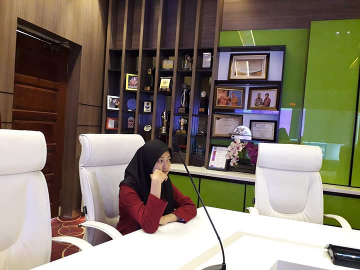

About Me Halo teman, salam kenal.. Perkenalkan nama saya Fatihannisa Listy Zulmi, saya berumur 19 tahun, saya berdomisili di Binjai(Salam dari Binjai... Horas) Saya adalah seorang mahasiswi dari Fakultas Ilmu Komputer dan Teknologi Informasi dari Universitas Sumatera Utara. Tahun ini saya telah menghabiskan kurang lebih 2 bulan berjalan di semester 3 perkuliahan. Pada tahun 2008 saya bersekolah di SD Swasta Gajah Mada Binjai, disana saya menghabiskan waktu 6 tahun belajar bersama dengan teman-teman dengan suku dan agama yang berbeda-beda. Hal yang paling saya suka saat SD ialah lapangan basket yang ada di sekolah dan juga perpustakaan di sekolah. Pada tahun 2014 saya melanjutkan sekolah di SMP Negeri 1 Selesai yang berada di dekat rumah saya. Di sini saya mendapat banyak teman baru lagi. Hal yang paling saya suka saat SMP yaitu halaman sekolah dengan jajaran pohon mahoni. Disaat musim berangin, daun mahoni akan berguguran dan membuat suasana seperti di dalam novel, menjadi melankolis. Pada tahun 2017 saya melanjutkan sekolah di SMK Negeri 1 Binjai dengan jurusan Rekayasa Perangkat Lunak. Di sini saya mendapat teman baru lagi karena teman-teman lama melanjutkan sekolah di sekolah sekitar rumahnya. Hal yang paling saya suka saat SMK ialah teman-teman yang selalu menghibur saya. Setelah lulus SMK saya sempat melanjutkan bekerja selama 1 tahun di Apotek sebelum akhirnya melanjutkan studi ke USU. Karna hal itu, pengetahuan saya akan obat dan beberapa penyakit menjadi lebih banyak. Hal yang saya suka saat bekerja ialah seorang kakak apoteker yang sangat baik dan handal dalam mengajari saya. |
Contact Me :